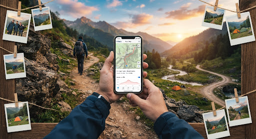
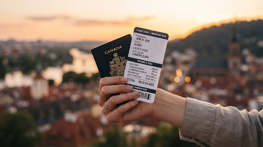
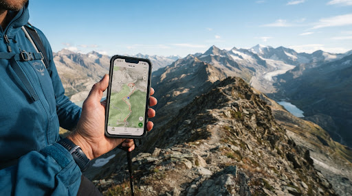
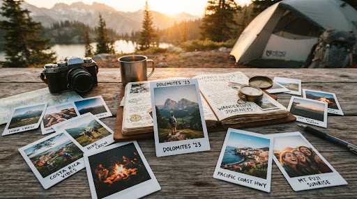
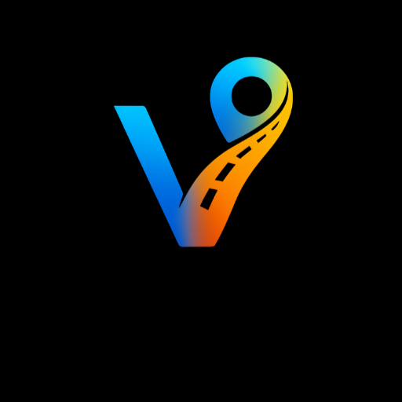
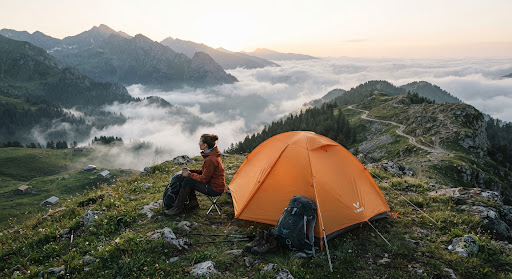

Yolculuğunu Kaydet,
Hikayeni Canlı Tut:
Viano ile Keşfe Çık
Gizli abonelik tuzakları veya karmaşık menüler yok. Gittiğin rotaları harita üzerinde adım adım kaydet, fotoğraflarını anılara dönüştür ve sevdiklerinle özgürce paylaş.

Aktif Rota
Kaçkar Dağları Yolu
Neden Viano? Çünkü Seyahatler Şeffaflığı Hak Eder.
Yolda olmak özgürlüktür. Bu yüzden biz karmaşık abonelik tuzaklarını, sürekli yenilenen deneme sürümü bildirimlerini veya kart istemelerini kenara bıraktık.

Sürpriz Yok, Deneme Tuzağı Yok
Ne görüyorsanız odur. Gizli 14 günlük deneme süreleri, sizden kredi kartı isteyen kurnaz formlar veya habersiz çekimler Viano'da yer almaz.

Yolunuz Asla Kaybolmaz
İster sarp bir dağ zirvesinde internet çekmezken yürüyüş yapın, ister sahil şeridinde araba sürün; GPS motoru rotanızı milimetrik kaydeder.

Fotoğraflarınız Rotanızla Konuşur
Yol üstündeki harika bir mola veya gün batımı... Çektiğiniz her kareyi otomatik olarak rotadaki tam durak noktasına harita üstünde iğneler.
Macera Dolu Rotalar İçin
Akıllı Seyahat Özellikleri
Sadece çizgi çekmekle kalmaz; yolculuğunuzun ritmini, anılarını ve anlık verilerini görsel bir şölene dönüştürür.
3B Rota Animasyonu ve Canlandırma
Tamamladığınız yolculuğu sanki bir sinema sahnesi gibi harita üzerinden hareketli bir 3B video olarak oynatın. Sosyal medyada ya da aile albümünde paylaşmaya hazır dinamik klip çıktısı alın.

Viano Uygulaması
Rota Takip & Macera Defteri
Mola ve Zirve İstatistikleri
Nerede ne kadar soluklandınız, en dik yokuşu hangi tempoda aştınız, rotanızın en yüksek irtifası neydi? Viano tüm bu verileri pürüzsüz grafiklerle önünüze serer.
Gezgin Topluluğu ile Yeni Rotalar Keşfedin
Sadece kendi adımlarınızı değil; diğer doğa yürüyüşçülerinin, karavancıların ve motosiklet tutkunlarının açtığı gizli patikaları keşfedin. GPX formatında kolayca indirin veya rotanızı tek dokunuşla arkadaş grubunuza gönderin.


3 Basit Adımda Yol Hikayeniz Hazır
Karmaşık ayarlarla uğraşmadan hemen başlayın.
Play Store'dan İndir & Başlat
Google Play Store'dan saniyeler içinde telefonunuza kurun. Uzun kayıt formları veya kart bilgisi girmeden tek dokunuşla kayda başlayın.
Yola Çık & Anılarını Yakala
Doğada yürürken ya da arabanızla sürüş yaparken Viano arka planda GPS rotanızı hassasiyetle kaydeder. Beğendiğiniz yerlerde fotoğraf çekin, anında rotaya eklensin.
Rotanı Paylaş veya Arşivle
Yolculuğunuz bittiğinde anılarınızı interaktif bir seyahat günlüğü olarak kaydedin, GPX olarak dışa aktarın ya da sevdiklerinizle tek tıkla paylaşın.
Bir fikriniz, öneriniz ya da sorunuz mu var? Biz buradayız.
Viano, gezginler tarafından gezginler için titizlikle geliştirildi. Geri bildirimleriniz ve yol hikayeleriniz bizim için paha biçilmez değerde.
Hazır mısınız?
Haritanızı açın, rotanızı başlatın ve ilk anınızı kaydedin. Yol açık, keşif sizi bekliyor!